An autonomous safety drone with onboard AI. It finds the people it’s sent for and ignores everything else. It runs on its own long-range radio, so it works where networks don’t.
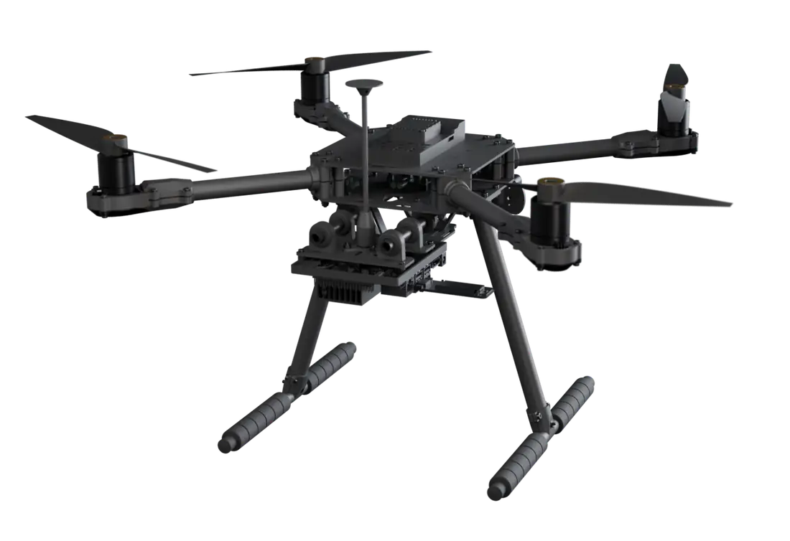
Mission
Three real problems at UTSA. One autonomous drone.
The drone hosts its own Wi-Fi and server. Any phone can connect and watch live video in a web browser, with no app to install. It also sends text messages over its long-range radio to every station in range, like a cell network without the towers.
It patrols a UTSA construction site on its own and checks on the crew. Onboard AI locks onto workers in high-visibility vests, ignores everything else, and sends an alert when someone may need help.
Campus safety can send the drone instead of an officer. It flies to the person who asked, follows 3 meters behind them to their car, and watches from above. If the radio link drops, it flies home on its own.
Hardware
Rendered from the manufacturers’ 3D models and our own board designs. The two circuit boards, the propellers and the radio housing were designed for this project.
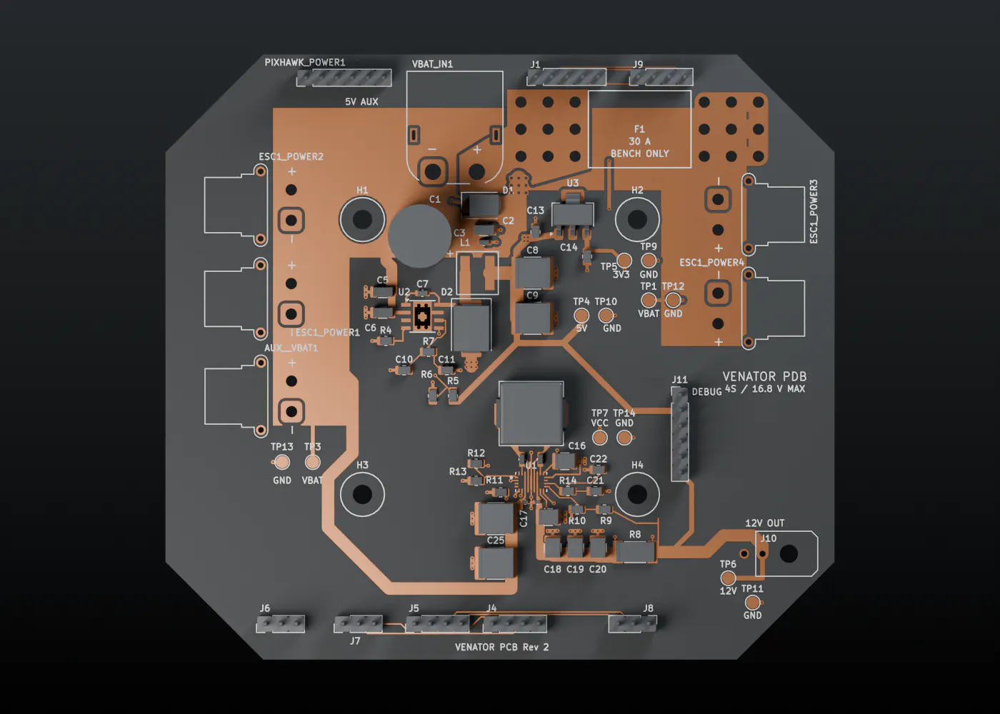
Designed for this project. It carries the 4S battery to the four ESCs and makes the 12 V rail for the Jetson and the 5 V and 3.3 V rails for servos and sensors. Shown without its solder mask, so the copper shows.
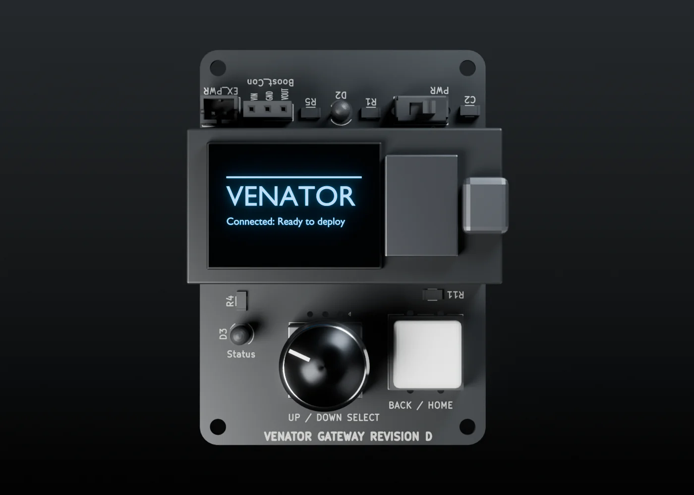
Designed for this project. A Heltec WiFi LoRa 32 V3 with its screen, a knob and a back button, on its own board. It runs the motor tests and a 4 ft hover demo over the 915 MHz link, with no laptop. Shown without its antenna.
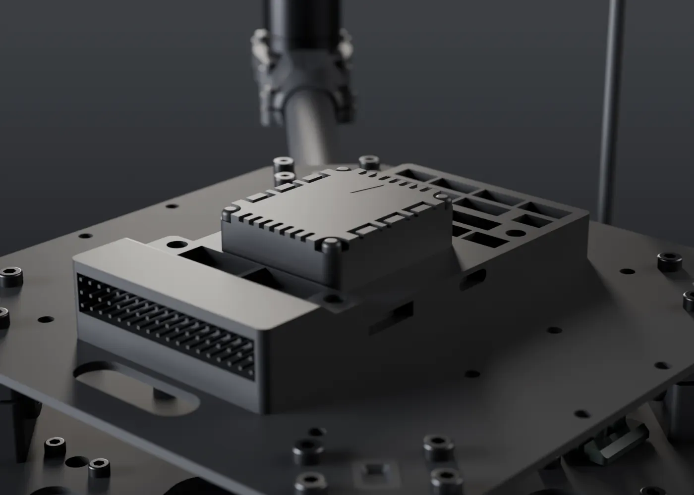
The flight controller, mounted on the top plate. Built to FMUv6X, the open autopilot standard.
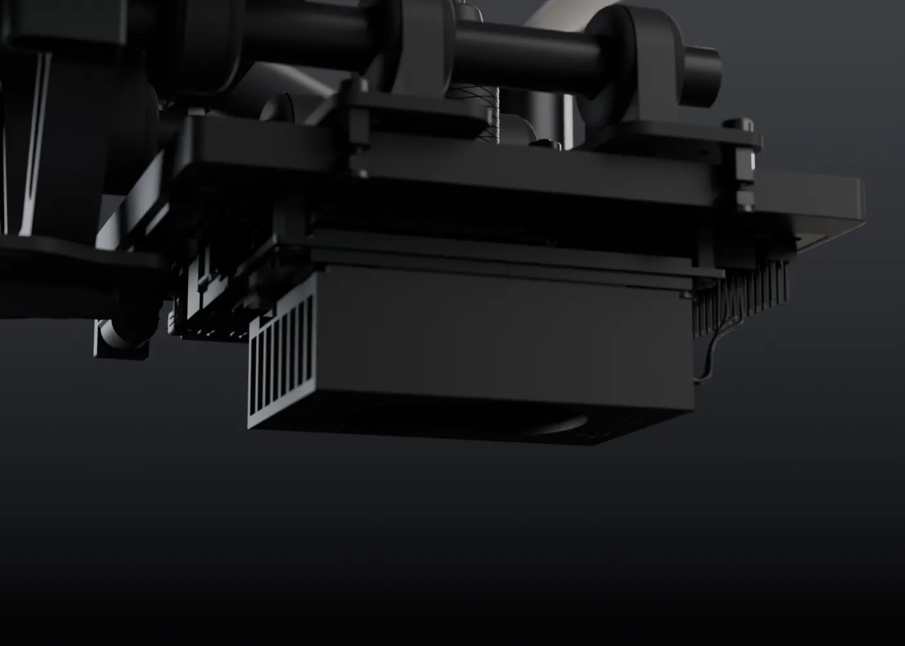
The onboard computer. It runs the AI and the command server and tells the flight controller what to do. The 915 MHz radio sits on the shelf above it: a Heltec Wireless Stick V3, shown here as the Lite model, without its small screen.
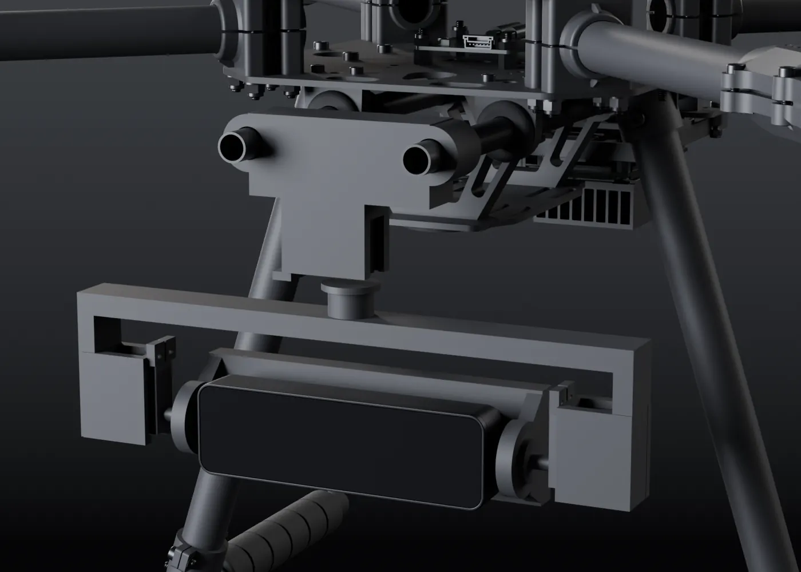
The eyes. A stereo depth camera that measures the distance to everything it sees, with infrared lighting for low light.
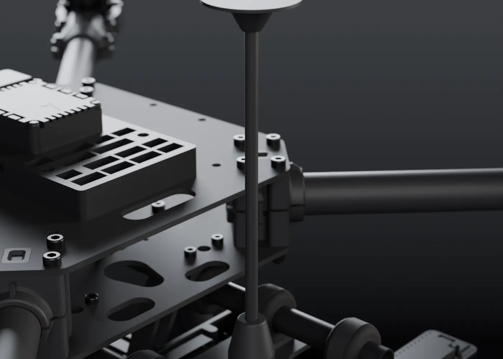
GPS, mounted high on the tail mast for a clear view of the sky.
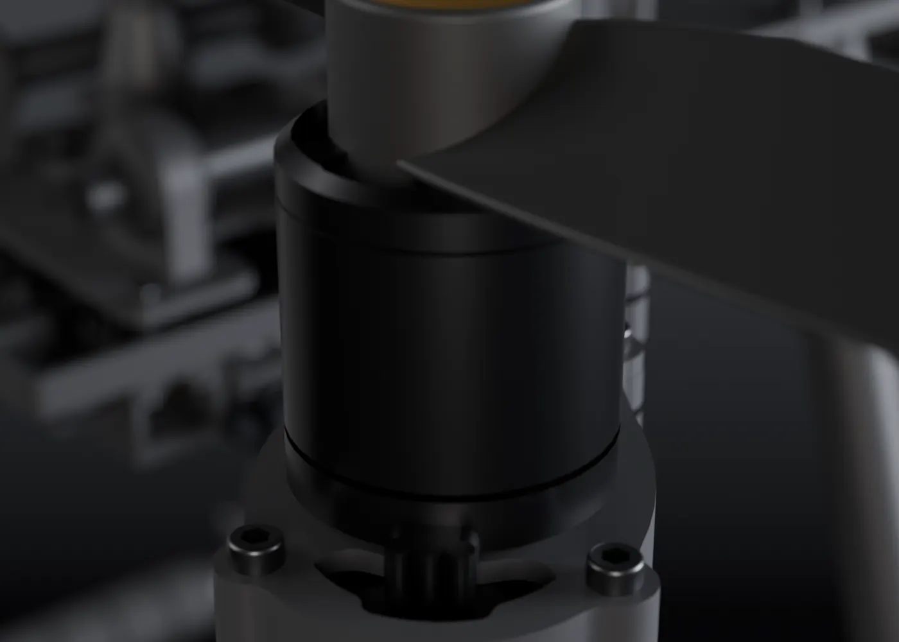
One of four brushless motors, each turning a 10-inch propeller.
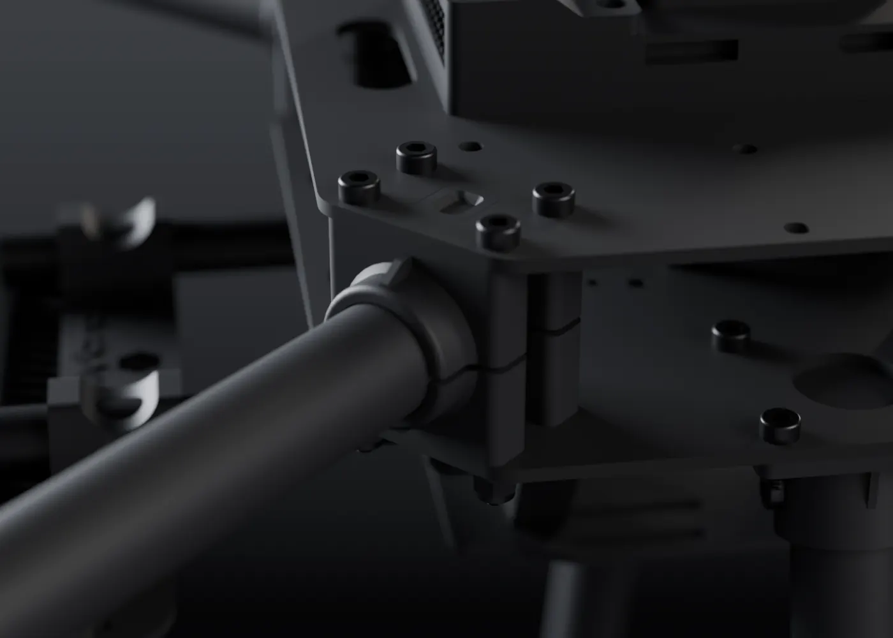
One of four carbon fiber arms on a 500 mm frame, each locked into the body by a two-piece clamp.
Views
Top, front, side and rear views of the same model. Open any view at full size.
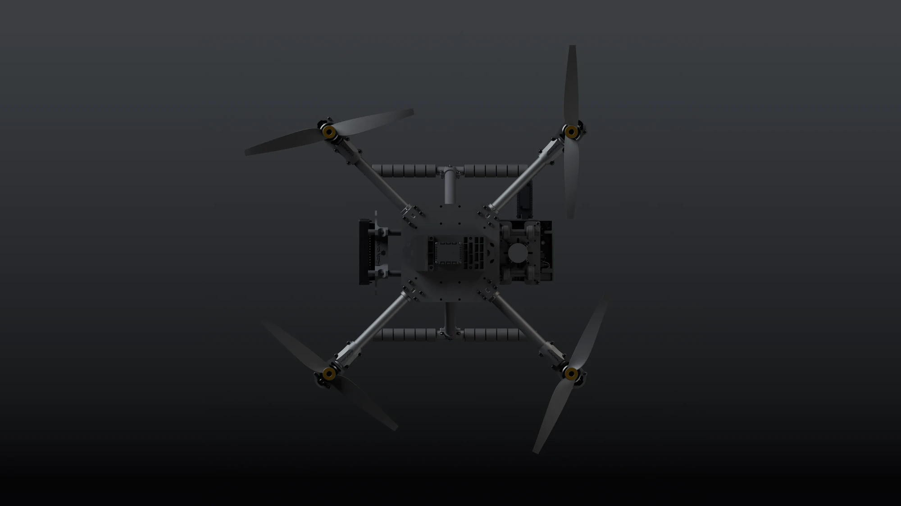
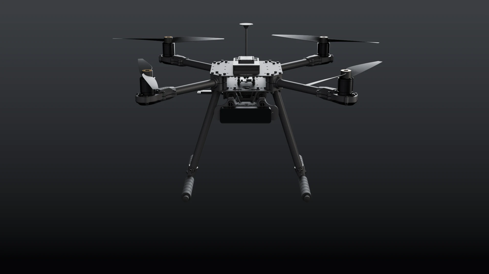
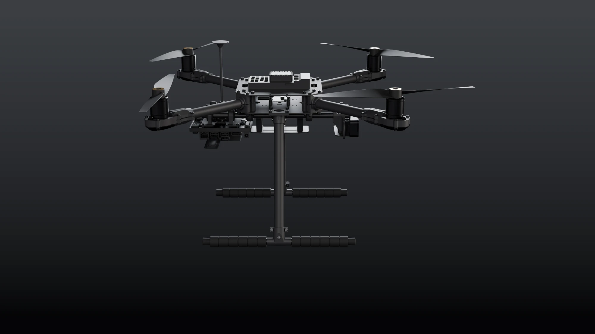
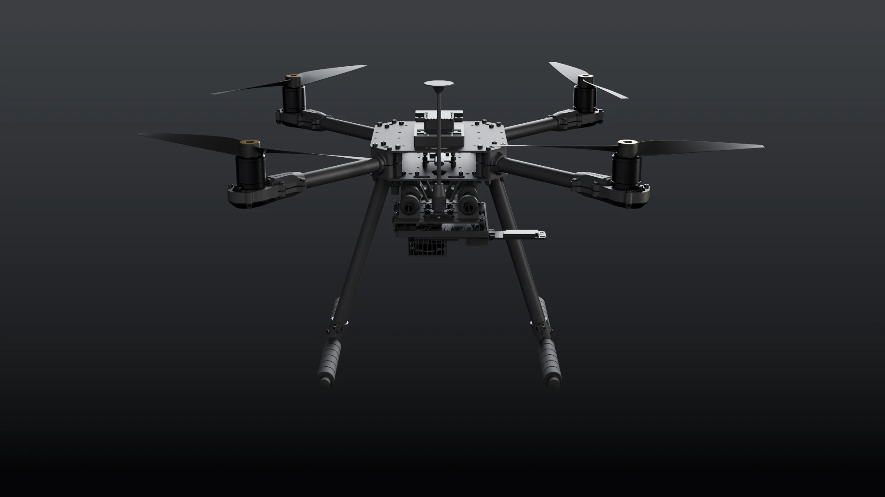
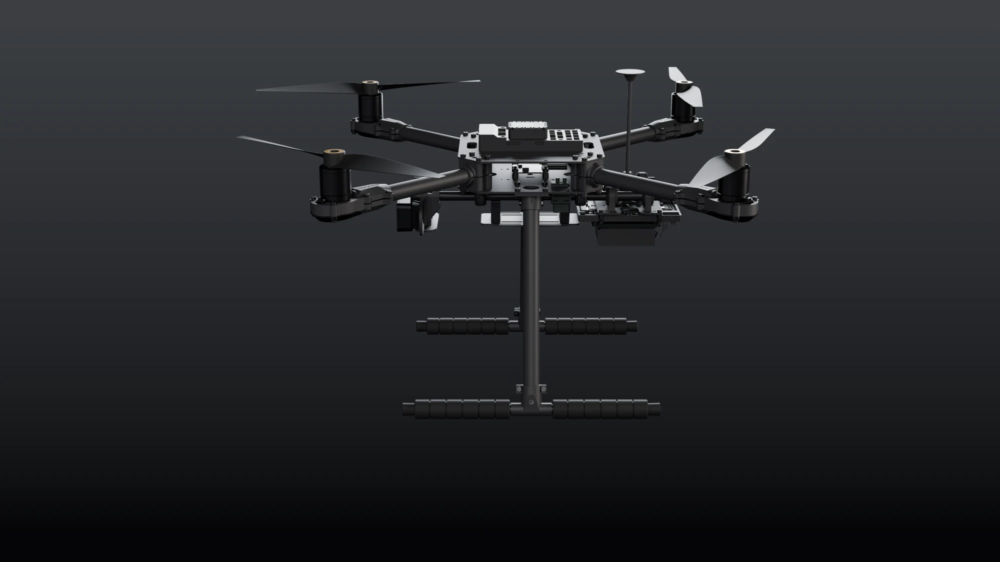
Top view